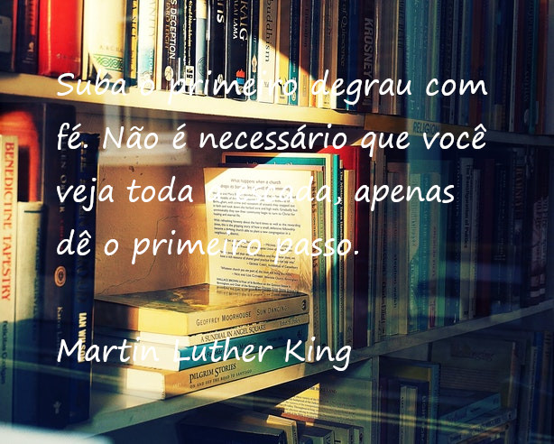

Frases para melhorar seu dia!
As pessoas mais felizes não têm as melhores coisas. Elas sabem fazer o melhor das oportunidades que aparecem em seus caminhos.
Clarice Lispector
Você tem que acordar cada manhã com determinação se você pretende ir para a cama com satisfação.
George Lorimer

Suba o primeiro degrau com fé. Não é necessário que você veja toda a escada, apenas dê o primeiro passo.
Martin Luther King
Cada segundo é tempo para mudar tudo para sempre.
Charles Chaplin
Se quer viver uma vida feliz, amarre-se a um objetivo, não às pessoas ou aos objetos.
Albert Einstein